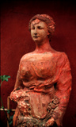

Aphrodite's Girdle & Athena's Shawl:
| ||
|  | ||
| Aphrodite | Athena | Church of the Salute |
|
In Venice, Italy, on the campanile of a Carmelite church, a statue of the Madonna standing on a crescent moon holds what appears to be a dangling rag. It represents the scapular, a sacred cloth she offers to the Catholic faithful who believe that it can protect them from the eternal fires of Purgatory. Nearby, on the neighboring Campo Santa Margarita, a frieze shows the Virgin Mary enveloping dwarf-sized followers with a cape. Since the early Middle Ages all over Venice, the ordinary Venetian could see representations of sacred women offering snake-like girdles of fabric or wearing a voluminous mantle. These images are part of a complex code alluding to women's identity choices and eros. For millennia, artists both used representations of fabric to depict feminine powers. During 3,000 year of popular art in the Veneto a visual language developed which used draped fabric to signify women's emotional states and to give information about women's sexual and social identities. Over the same period of time, Venetian casalinghe (traditional Italian housewives) developed distinctive styles of hanging laundry. Today, (but perhaps not tomorrow), one can read laundry lines as lines of individual music in the air, lines of a diary. Venetian women can express herself though her personal art of hanging laundry; she can also make, for passersby to read, little altars to her own household gods. For fifteen years Holly Smith Pedlosky has been photographing and documenting Venetian laundry and the women whose art it is to hang it. In this slide talk, she will show her own art work: color photographs of Venetian casalinghe and their laundry. She will also show slides of Venetian art going back to sixth century BC effigies of the goddess Reitia, a goddess of all living things worshipped by a pre-Roman tribe called the Veneti. SHe will demonstrate how there is in Venetian culture and life a language of draped fabric, waiting to be decoded. This slide talk will link the laundry-hanging practices of older Venetian housewives with the ancient traditions connecting women with draped fabric. After the slide talk there will be a discussion about the significance of these traditions and the new interdisciplinary fields that are beginning to explore women's work and women's identities over the past 3,000 years of cultural history. Then the group will discuss levels of meaning in participants' work in relation to concepts of identity and eros in art by and/or about women.
Each registrant will bring 3-10 of her or his own images in any still photographic medium: black and white or color, prints or transparencies, straight or digital. This Workshop is open to photographers of all levels. Limited enrollment.
telephone: (508) 548-2069
Friday 15 October, 1999, 10 am - 5 pm
Taught by Holly Smith Pedlosky | ||
|
Would you like to meet some more Venetian housewives? | Would you like to see
some more Laundry? | Would you like to
find out more about laundry, cloth, and draped fabric in Venetian art? |